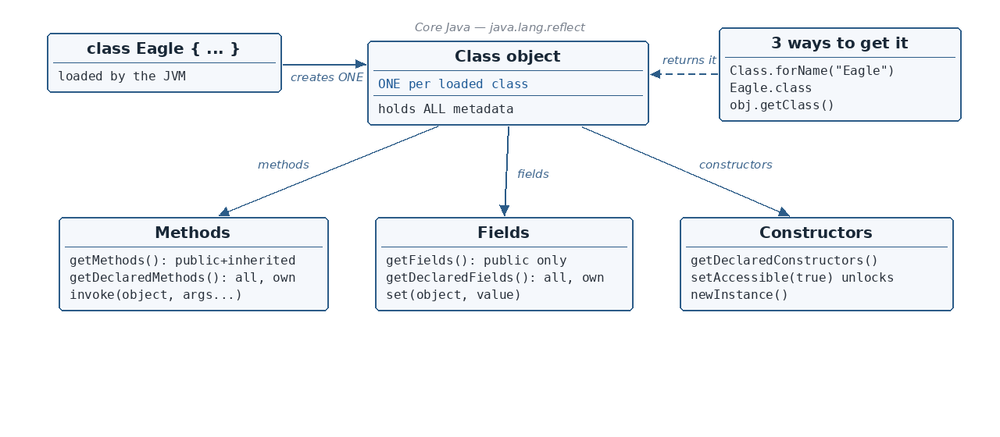

Way 1 — Class.forName("...") (using the class name as a String)
☕ 8 min read · 🎬 Video walkthrough · 📊 UML diagram · 💻 Runnable code
⚡ In a nutshell — What reflection is and what kinds of questions it can answer about a class · The special Class object — Java's "identity card" for every loaded class · Three ways to get the Class object · Inspecting methods: getMethods() vs getDeclaredMethods(), and how to invoke a method by name
Definition: Reflection is used to examine classes, methods, fields, and interfaces at runtime, and it is also possible to change the behaviour of the class.

The one diagram that ties it all together.
Everyday analogy: normally your code is like a driver using a car — you press the pedals the manufacturer gave you. Reflection is like being a mechanic with an X-ray machine: while the car is running, you can look under the hood, list every part (even hidden ones), and even reach in and change things the manufacturer sealed away.
Examples of what reflection can tell you (from the notes):
What all methods are present in the class
What all fields are present in the class
What is the return type of a method
What is the modifier of the class (public, final, ...)
What all interfaces the class has implemented
Change the value of a public or even private field of the class, etc.
The Class Object — Where Reflection Starts
How do we do reflection of a class? To reflect a class, we first need to get an object of the special class named Class.
What is this class Class?
An instance of the class Class represents a class during runtime.
The JVM creates exactly one Class object for each and every class that is loaded at runtime.
This Class object holds the metadata (data about data) of that particular class: its methods, fields, constructors, modifiers, interfaces, etc.
Analogy: think of the Class object as the identity card + full CV of a class. There is one ID card per class, issued by the JVM the moment the class is first loaded, and it lists everything the class contains.
Three Ways to Get the Class Object
classBird {}
Class birdClass = Class.forName("Bird");
Useful when you only know the class name as text (for example, read from a configuration file). This is exactly how JDBC drivers used to be loaded.
Way 2 — .class (compile-time literal)
Class birdClass = Bird.class;
The simplest way when you already know the type while writing the code.
Way 3 — getClass() (from an existing object)
Bird birdObject = newBird();
Class b = birdObject.getClass();
Ask any object "what class are you?" — every object inherits getClass() from Object.
All three together, proving there is only ONE Class object per class:
publicclassMain {
publicstaticvoid main(String[] args) throwsException {
Class c1 = Class.forName("Bird"); // way 1Class c2 = Bird.class; // way 2Class c3 = newBird().getClass(); // way 3System.out.println(c1 == c2); // same object?System.out.println(c2 == c3);
}
}
classBird {}
Output:
true
true
First Look at Metadata: Name and Modifiers
We will use this Eagle class for the rest of the chapter:
import java.lang.reflect.Modifier;
publicclassMain {
publicstaticvoid main(String[] args) {
Class eagleClass = Eagle.class;
System.out.println(eagleClass.getName()); // class nameSystem.out.println(Modifier.toString(eagleClass.getModifiers())); // class modifier
}
}
Output:
Eagle
public
(getModifiers() returns a number; the helper Modifier.toString(...) turns it into readable text like "public".)
Reflection of Methods
All the reflection helper types (Method, Field, Constructor, Modifier) live in the package java.lang.reflect.
getMethods() — public methods only, INCLUDING inherited ones
import java.lang.reflect.Method;
publicclassMain {
publicstaticvoid main(String[] args) {
Class eagleClass = Eagle.class;
Method[] methods = eagleClass.getMethods(); // ONLY PUBLIC methodsfor (Method method : methods) {
System.out.println(method.getName()); // method's nameSystem.out.println(method.getReturnType()); // what it returnsSystem.out.println(method.getDeclaringClass()); // which class defined it
}
}
}
Output (shortened):
fly
void
class Eagle
eat
void
class Eagle
toString <-- note: Object's methods appear too!
class java.lang.String
class java.lang.Object
... (equals, hashCode, wait, notify, ...)
Remember:getMethods() returns only public methods, but it also prints the Object class methods (toString, equals, hashCode, ...) because every class inherits them.
getDeclaredMethods() — ALL methods of this class only (public + private), NO inherited ones
How do we see a private method? Use getDeclaredMethods():
Class eagleClass = Eagle.class;
Method[] methods = eagleClass.getDeclaredMethods();
// Returns ALL methods of the Eagle class only (public AND private),// and NOT the Object class methods.
getMethods() — Only public — Yes — includes Object's methods
getDeclaredMethods() — All (public + private + protected + default) — No — this class only
Invoking a Method Through Reflection
Reflection can not only list methods — it can call them, using just their name as a String.
import java.lang.reflect.Method;
publicclassMain {
publicstaticvoid main(String[] args) throwsException {
Class eagleClass = Class.forName("Eagle");
Object eagleObject = eagleClass.newInstance(); // create an Eagle instance// find the method by NAME + PARAMETER TYPES:Method flyMethod = eagleClass.getMethod("fly",
int.class, boolean.class, String.class);
// invoke it: (which object to call it on, then the actual arguments)
flyMethod.invoke(eagleObject, 1, true, "hello");
}
}
Output:
hi
Step by step:
Get the Class object (Class.forName("Eagle")).
Create an instance with newInstance() — we need a real object to call a non-static method on.
getMethod("fly", int.class, boolean.class, String.class) — find the exact method; the parameter types are needed because methods can be overloaded.
invoke(object, arg1, arg2, arg3) — actually run it.
Reflection of Fields
import java.lang.reflect.Field;
Class eagleClass = Eagle.class;
Field[] publicFields = eagleClass.getFields(); // public onlyField[] allFields = eagleClass.getDeclaredFields(); // public + private
getFields() — Only public fields — Includes inherited public fields
getDeclaredFields() — Public + private (everything in this class) — No inherited fields — this class only
Setting the Value of a Public Field
import java.lang.reflect.Field;
publicclassMain {
publicstaticvoid main(String[] args) throwsException {
Class eagleClass = Eagle.class;
Eagle eagleObject = newEagle(); // or: (Eagle) eagleClass.newInstance()Field field = eagleClass.getDeclaredField("breed"); // "breed" = field name
field.set(eagleObject, "EagleBreed"); // (which object, new value)System.out.println(eagleObject.breed);
}
}
Output:
EagleBreed
Accessing PRIVATE Fields — setAccessible(true)
What about a private field (like canSwim)?
Normally: no — a private field cannot be accessed from another class. Even though getDeclaredField(s)returns both public and private fields, trying to set a private one throws an IllegalAccessException.
Then how do we achieve it? One extra line unlocks the door:
import java.lang.reflect.Field;
publicclassMain {
publicstaticvoid main(String[] args) throwsException {
Class eagleClass = Eagle.class;
Eagle eagleObject = newEagle();
Field field = eagleClass.getDeclaredField("canSwim"); // a PRIVATE field
field.setAccessible(true); // <-- THE IMPORTANT LINE: switch off the access check
field.set(eagleObject, true);
System.out.println(field.get(eagleObject));
}
}
Output:
true
Remember:field.setAccessible(true) is the key that opens private members to reflection. Drawback: via reflection you can change the value of a private field — the very thing private was supposed to prevent.
Reflection of Constructors — Even Private Ones
A class with a private constructor normally cannot be instantiated from outside (this is how the Singleton pattern protects itself). Reflection can bypass even that.
Reflection just created an object of a class whose constructor is private — something normal Java code can never do.
The Big Warning — and When Reflection Is OK
Remember: Reflection breaks the OOP principle of ENCAPSULATION. Encapsulation says: "keep the data private, expose only safe methods." Reflection walks straight past private and reads or changes whatever it wants.
Why this is dangerous:
Your class's internal rules (validation inside setters, singleton guarantees, immutability) can be silently bypassed.
Code that depends on private internals can break whenever those internals change.
When is reflection appropriate? Reflection is a power tool for frameworks and tooling, not for everyday business code:
Frameworks like Spring (creating and wiring your objects), Hibernate (filling entity fields from database rows)
Unit-testing tools (e.g. injecting mock values into private fields)
Serialization/JSON libraries (e.g. Jackson reading your fields to build JSON)
IDEs and debuggers that must inspect arbitrary classes
Rule of thumb: if you wrote the class yourself and can just call its public methods — do that. Reach for reflection only when you must work with classes whose names/structure you don't know until runtime.
Quick Revision
Reflection = examining classes, methods, fields, and interfaces at runtime, and even changing their behaviour.
The JVM creates one Class object per loaded class; it carries all the metadata (methods, fields, constructors).
Three ways to get it: Class.forName("Bird"), Bird.class, birdObject.getClass().
getMethods() = public only, includesObject methods. getDeclaredMethods() = all methods, this class only.
Invoke a method: getMethod(name, paramTypes...) then method.invoke(object, args...).
getFields() = public fields only; getDeclaredFields() = public + private, no inherited fields.
Set a field: field.set(object, value). For private members, call setAccessible(true) first — works for fields, methods, and constructors (even private constructors via getDeclaredConstructors() + newInstance()).
Reflection breaks encapsulation — that is its main drawback. Leave it to frameworks (Spring, Hibernate, test tools); avoid it in normal application code.
👏 Found this useful? Give it a few claps so more developers discover it,
and follow for the whole series — every article ships with a UML diagram, runnable code, a narrated
video, and a companion PDF. Happy building! 🚀